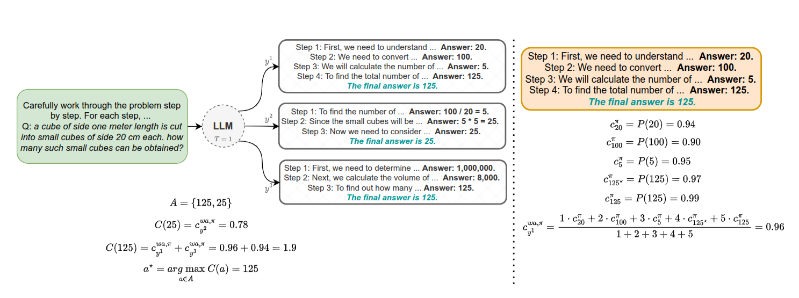
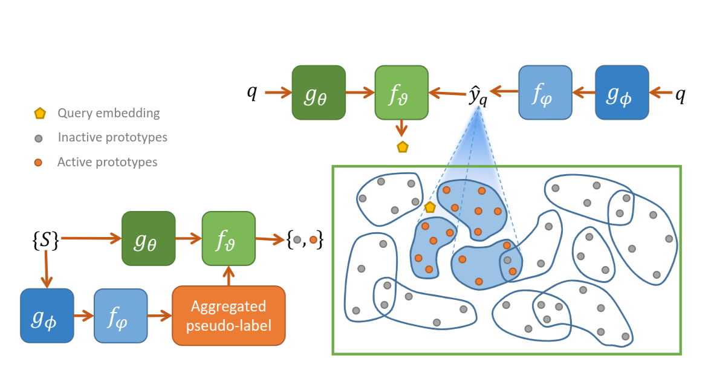
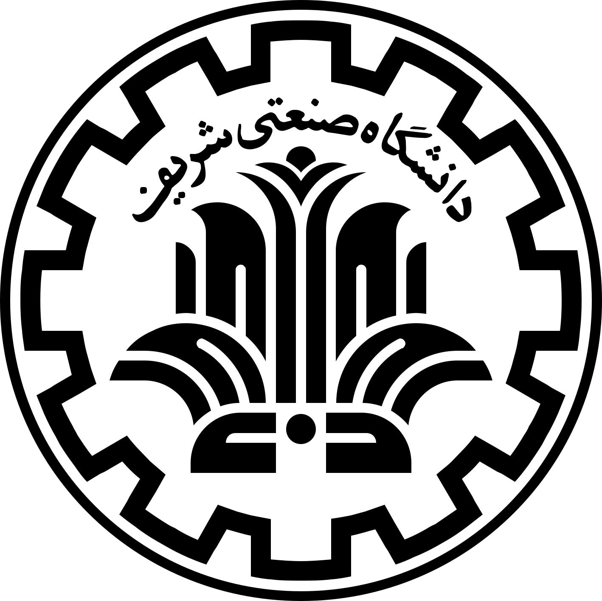

I am a first-year PhD student in Computer Science (EDIC) at EPFL and a research assistant in the Natural Language Understanding group at the Idiap Research Institute, supervised by Dr. James Henderson and Prof. Robert West.
My research focuses on reasoning and memory representations in the latent space of large language models. I am interested in how models encode, retain, and use the information available to them when reasoning, and how these processes can be understood through an information-theoretic perspective. As part of the BALM project at Idiap, I am exploring information bottlenecks as a way to study and shape these representations.
Before EPFL, I earned my B.Sc. in Computer Engineering at Sharif University of Technology, where I worked with Prof. Mahdieh Soleymani Baghshah, primarily on reasoning and uncertainty in large language models. My earlier work explored meta-learning and vision-language models. I also collaborated with Prof. Davood Rafiei at the University of Alberta on reinforcement learning for Text-to-SQL.
Outside research, astronomy and astrophysics remain a personal passion. I have long loved looking at the night sky and learning about the universe, an interest that led me to a silver medal at the International Olympiad on Astronomy and Astrophysics (IOAA). I still enjoy following new discoveries in the field.
📝 Publications

CER: Confidence Enhanced Reasoning in LLMs
Ali Razghandi, Seyed Mohammad Hadi Hosseini, Mahdieh Soleymani Baghshah
Annual Meeting of the Association for Computational Linguistics (ACL 2025), Main Conference
- Makes LLM reasoning uncertainty-aware by weighing reasoning paths by the model’s confidence in their intermediate answers, improving accuracy by up to 7.4% on math and 5.8% on open-domain QA without fine-tuning.

Divide and Conquer: Two-Level Problem Remodeling for Large-Scale Few-Shot Learning
Mohamadreza Fereydooni, Hosein Hasani, Ali Razghandi, Mahdieh Soleymani Baghshah
NeurIPS 2023 Workshop on Robustness of Few-shot and Zero-shot Learning in Foundation Models (R0-FoMo)
- Splits large-scale few-shot learning into two levels: coarse superclass recognition robust to sub-population shift, and generative experts specialized per superclass, combined with a Bayesian scheme.
💼 Experience
📖 Education


👨🏫 Teaching & Service
- Deep Learning (graduate), Prof. Soleymani · Spring 2024
- Machine Learning (graduate), Dr. SeyyedSalehi · Spring 2024
- Large Language Models (graduate), Prof. Soleymani & Prof. Rohban · Fall 2023
- Artificial Intelligence, Prof. Soleymani & Prof. Rohban · Fall 2023
- Linear Algebra, Prof. Rabiee · Fall 2022, Spring 2023
- Engineering Probability and Statistics, Dr. Sharifi-Zarchi · Fall 2022
- Fundamentals of Programming · Fall 2021
🎖 Honors and Awards
- 2020, Silver Medal, International Olympiad on Astronomy and Astrophysics (IOAA).
- 2019, Gold Medal, Iranian National Olympiad in Astronomy and Astrophysics.
- 2019 – 2020, Member of the Iranian Young Scholars Club and the Iranian national IOAA team.